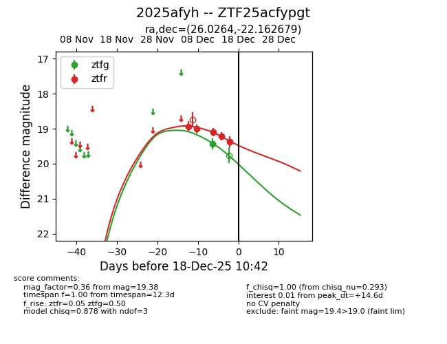
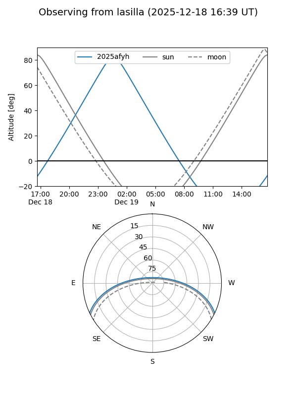
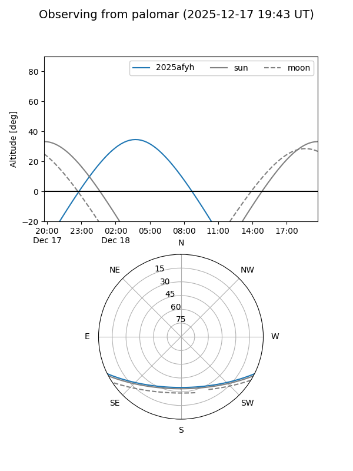
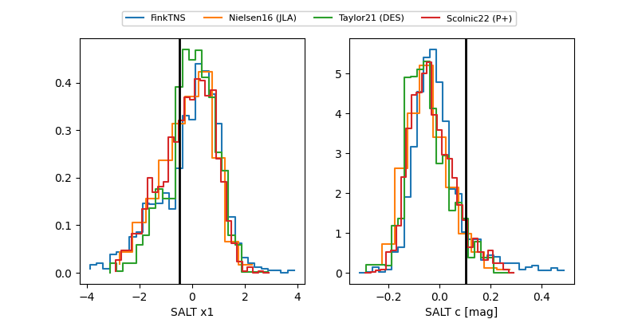

2025afyh
Target 2025afyh at 2025-12-18 10:45
Aliases and brokers:
FINK: fink-portal.org/ZTF25acfypgt
Lasair: lasair-ztf.lsst.ac.uk/objects/ZTF25acfypgt
ALeRCE: alerce.online/object/ZTF25acfypgt
TNS: wis-tns.org/object/2025afyh
YSE: ziggy.ucolick.org/yse/transient_detail/2025afyh
alt names
ZTF25acfypgt (ztf,fink_ztf)
2025afyh (tns,yse)
Coordinates:
equatorial (ra, dec) = 26.0264,-22.16268
equatorial (HMS+DMS) = 01:44:06.33,-22:09:45.64
galactic (l, b) = (193.2509,-77.05317)
Photometry
last ztfg=19.42, ztfr=19.38
1 ztfg, 5 ztfr detections
Lightcurve

Visibility


Additional plots
